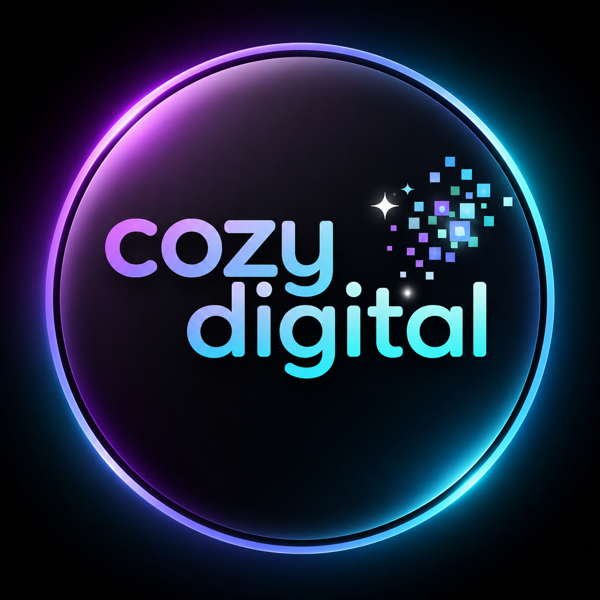
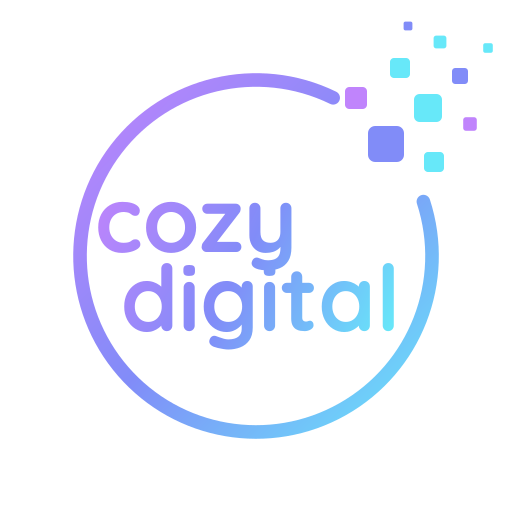
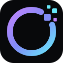
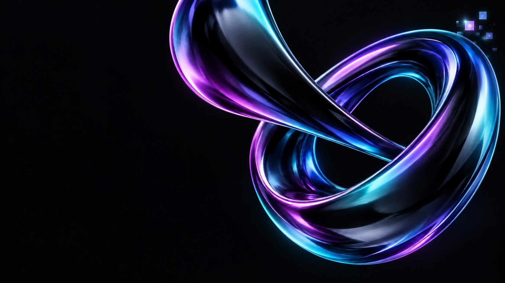
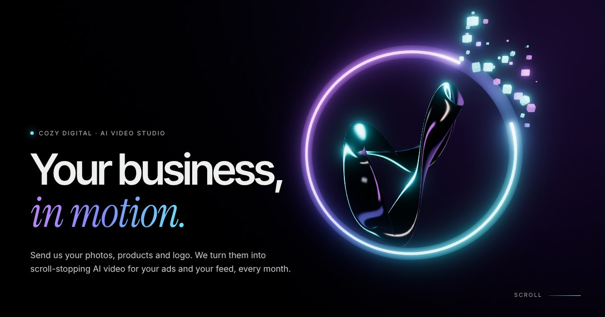

Cozy Digital · art bible
Your business, in motion.
The brief, as filled in
| Concept | Cozy Digital sells monthly AI video to businesses. One-line story as you scroll: your photos go into the Cozy ring, break into the logo's pixels, and come out as film. |
|---|---|
| Reference to beat | Cozy Digital's own current hero art and logo (from the kaysongt/cozydigital-site repo). The live site was not reachable from the build environment, and no third-party reference site was named. |
| Style | Chrome and glass, product CGI, on a near-black stage. Cinematic motion, not maximal. |
| Signature moment | A print of the customer's photo breaks cell by cell into the logo's pixel squares. They fly through the open ring and land as that same shot, playing. |
| 3D | Procedural only: a swept ribbon, tori, instanced cubes, and a PMREM environment baked once from brand-coloured softboxes. |
| Image budget | $0 spent. No image generation was run. No Replicate key was available, and no Higgsfield credits were used without an OK. Footage is Cozy Digital's existing AI reel. |
| Targets | Desktop first, with phones as a first-class layout (own camera paths per chapter). Adaptive resolution live. |
| No-go | No other brand's marks. No invented results, testimonials or client names. Higgsfield is not named on the public page. |
| Interview | Skipped: the owner was away and asked for the build. The palette and logo were fixed by the request ("colors the same, logo about the same"). No three-way style frame was rendered. The direction follows the existing brand art. |
Palette
#08090bcozydigital.org --studio-bg
#67e8f9site accent, logo ring (lower right)
#818cf8logo ring (middle)
#c084fclogo ring (upper left), sampled
upper-left to lower-right, as on the logo
#edf0ed--studio-ink
Type
Work that stops the scroll.
Inter Tight (display) with Instrument Serif italic accents in the ring gradient. Inter for text. Quicksand Bold only in the wordmark and the agent's name.
cozy digital · Cozy Agent
Logo: original and modernised

Original: glowing glass ring, stacked wordmark, pixel scatter top right.

Modernised: the same ring, colours and Quicksand wordmark, drawn flat as pure paths. The ring now opens at the upper right and breaks into the pixels, so the loop literally turns digital. Built by tools/build-logo.mjs.
Horizontal lockup (nav)
Mark

Favicon: heavier ring, four pixels
The chosen direction

The bar: cozydigital.org hero art (still image).

Ours: a live chrome figure-eight threaded through the open logo ring, shedding pixels, with HDR bloom.
Every asset and where it came from
| Asset | Source | Prompt / recipe |
|---|---|---|
| Logo marks (SVG) | Generated by code | tools/build-logo.mjs: Quicksand Bold outlines (opentype.js) plus a parametric ring and pixel scatter. No AI prompt. |
| Chrome loop | Procedural | Gerono lemniscate split in depth, with an elliptical cross-section swept and twisted 3 half-turns (gfx/brand.js). Physical material with iridescence, lit by the baked environment. |
| Studio environment | Procedural, baked once | Black room with a violet key strip, a cyan rim strip, an indigo floor wash and a white top line, through PMREM. |
| Rings, pixels, orb, swarm | Procedural | Emissive torus with the brand gradient by angle and an animated gap. Instanced rounded cubes. Chrome sphere. |
| Reel clips + posters | cozydigital.org repo (public/videos/reel) | Existing Cozy Digital AI footage. Re-encoded to VP9 WebM next to each MP4 for browsers without H.264. |
| Print photo | First frame of shot-06.mp4 | ffmpeg -vf select=eq(n\,0), so the photo and the film are the same image. |
| "Your logo" card | Canvas 2D at runtime | A placeholder stamp in Quicksand and Inter. |
| OG image, icons | Rendered from the live page / SVG marks | tools/brand-png.mjs |